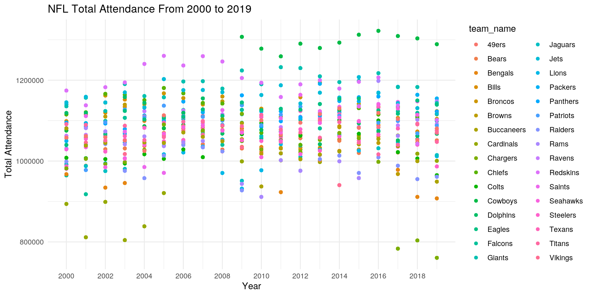

The main goal of my project is to perform data analysis on NFL team statistics and game attendance by fans by joining a dataset that contains the standings of every NFL team from their 2000-2019 seasons with a another dataset that contains the attendance of viewers for every week from the years 2000-2019. The standings dataset contains the points scored by and against the team, their wins and losses,their playoff/Superbowl status, as well as overall power rankings between the teams. The attendance dataset contains the total, home, and away attendance for every season, and it contains the weekly attendance for every year. I acquired these datasets from github, and I chose these two datasets because I have always enjoeed watching football, and I was curious to explore the information I could gather from analyzing the history of one of my favorite sports. I expect to find that a low overall power ranking for a team results in low total attendance for that season. I also expect to find that teams with poor win/loss records will have lower weekly attendance to their games.
library(tidyverse)
attendance <- readr::read_csv("https://raw.githubusercontent.com/rfordatascience/tidytuesday/master/data/2020/2020-02-04/attendance.csv")
standings <- readr::read_csv("https://raw.githubusercontent.com/rfordatascience/tidytuesday/master/data/2020/2020-02-04/standings.csv")
nfl <- attendance %>% left_join(standings, by = c("year", "team_name",
"team"))
nfl <- nfl %>% select(-margin_of_victory, -strength_of_schedule,
-points_differential)In order to join my two datasets together I used a left join and combined them based on the IDs of year, team_name, and team. Initially the attendance dataset had 10,846 observations with 8 variables, and the standings dataset had 638 observations with 15 variables. I combined both of the datasets into the nfl dataset which contains 10,846 observations with 20 variables. In combining the two datasets, no observations were lost because the variables and data from standings were just appended on to the end of the attendance dataset. I chose a left join because it was the simplest way to combine these two dataseets, and I wanted all the rows from the attendance dataset to return even if there was not a match in the standings dataset.
nfl_sum1 <- nfl %>% group_by(year, week) %>% summarize(mean_attendance = mean(weekly_attendance,
na.rm = T), sd_attendance = sd(weekly_attendance, na.rm = T),
n = n(), se_attendance = sd_attendance/sqrt(n), min_attendance = min(weekly_attendance,
na.rm = T), max_attendance = max(weekly_attendance, na.rm = T),
median_attendance = median(weekly_attendance, na.rm = T),
var_attendance = var(weekly_attendance, na.rm = T), IQR_attendance = IQR(weekly_attendance,
na.rm = T))
nfl_sum1 %>% head(10)## # A tibble: 10 x 11
## # Groups: year [1]
## year week mean_attendance sd_attendance n se_attendance min_attendance
## <dbl> <dbl> <dbl> <dbl> <int> <dbl> <dbl>
## 1 2000 1 66530. 8472. 31 1522. 54626
## 2 2000 2 67142. 7119. 31 1279. 51300
## 3 2000 3 68332 10021. 31 1800. 45653
## 4 2000 4 63451. 9945. 31 1786. 45702
## 5 2000 5 70715. 7189. 31 1291. 59869
## 6 2000 6 64803. 9487. 31 1704. 44296
## 7 2000 7 65463. 12144. 31 2181. 38293
## 8 2000 8 65518. 7417. 31 1332. 56508
## 9 2000 9 65369. 12349. 31 2218. 35286
## 10 2000 10 65361. 7388. 31 1327. 52244
## # … with 4 more variables: max_attendance <dbl>, median_attendance <dbl>,
## # var_attendance <dbl>, IQR_attendance <dbl>nfl_sum2 <- nfl %>% group_by(year) %>% summarize(mean_home = mean(home,
na.rm = T), sd_home = sd(home, na.rm = T), n = n(), se_home = sd_home/sqrt(n),
min_home = min(home, na.rm = T), max_home = max(home, na.rm = T),
median_home = median(home, na.rm = T), var_home = var(home,
na.rm = T), IQR_home = IQR(home, na.rm = T))
nfl_sum2 %>% head(10)## # A tibble: 10 x 10
## year mean_home sd_home n se_home min_home max_home median_home var_home
## <dbl> <dbl> <dbl> <int> <dbl> <dbl> <dbl> <dbl> <dbl>
## 1 2000 527475. 66357. 527 2891. 387475 647424 524775 4.40e9
## 2 2001 526029. 68831. 527 2998. 307315 627985 527193 4.74e9
## 3 2002 530605. 64747. 544 2776. 327272 643950 535046. 4.19e9
## 4 2003 533395. 70423. 544 3019. 288499 643997 545918. 4.96e9
## 5 2004 539701. 69724. 544 2989. 300267 702670 545459 4.86e9
## 6 2005 540743. 63904. 544 2740. 401035 716999 537174. 4.08e9
## 7 2006 550189. 49948. 544 2142. 457154 701049 547628. 2.49e9
## 8 2007 549928. 50004. 544 2144. 458437 704722 546359 2.50e9
## 9 2008 545623. 52562. 544 2254. 435979 708835 544536 2.76e9
## 10 2009 540070. 71976. 544 3086. 354276 718055 543927 5.18e9
## # … with 1 more variable: IQR_home <dbl>nfl_sum3 <- nfl %>% group_by(year) %>% summarize(mean_away = mean(away,
na.rm = T), sd_away = sd(away, na.rm = T), n = n(), se_away = sd_away/sqrt(n),
min_away = min(away, na.rm = T), max_away = max(away, na.rm = T),
median_away = median(away, na.rm = T), var_away = var(away,
na.rm = T), IQR_away = IQR(away, na.rm = T))
nfl_sum3 %>% head(10)## # A tibble: 10 x 10
## year mean_away sd_away n se_away min_away max_away median_away var_away
## <dbl> <dbl> <dbl> <int> <dbl> <dbl> <dbl> <dbl> <dbl>
## 1 2000 527475. 24366. 527 1061. 475595 571110 528974 5.94e8
## 2 2001 526029. 21504. 527 937. 491933 563480 528615 4.62e8
## 3 2002 530605. 22393. 544 960. 480152 571944 533192. 5.01e8
## 4 2003 533395. 32049. 544 1374. 450295 580027 538310 1.03e9
## 5 2004 539701. 24572. 544 1053. 471918 575138 541942. 6.04e8
## 6 2005 540743. 27278. 544 1170. 474137 595011 538356. 7.44e8
## 7 2006 550189. 14517. 544 622. 523715 583201 551602. 2.11e8
## 8 2007 549928. 16151. 544 692. 515869 582430 551514. 2.61e8
## 9 2008 545623. 16002. 544 686. 512254 574297 544850. 2.56e8
## 10 2009 540070. 31608. 544 1355. 484986 594312 535300 9.99e8
## # … with 1 more variable: IQR_away <dbl>I computed the summary statistics for three of my numeric variables which were away game attendance, home game attendance, and weekly game attendance. In order to calculate the statistics for the weekly attendance of every team, I grouped my joined dataset by year and week and summarized so that I could get statistics for every week in the season from the years 2000-2019. For total home and away game attendance for every team, I grouped the joined dataseet just by year and used summarize to get the statistics for every season from 2000-2019. The specific summary statistics I used were mean, standard deviation, the count, the standard error, the minimum, the maximum, the median, the variance, and the interquartile range.
nfl %>% filter(team_name == "Cowboys", year == "2002") %>% summarize(mean(weekly_attendance,
na.rm = T))## # A tibble: 1 x 1
## `mean(weekly_attendance, na.rm = T)`
## <dbl>
## 1 65463.nfl %>% group_by(team_name, sb_winner, year) %>% filter(sb_winner ==
"Won Superbowl") %>% summarize(count = n()) %>% summarize(n_distinct(count))## # A tibble: 12 x 3
## # Groups: team_name [12]
## team_name sb_winner `n_distinct(count)`
## <chr> <chr> <int>
## 1 Broncos Won Superbowl 1
## 2 Buccaneers Won Superbowl 1
## 3 Chiefs Won Superbowl 1
## 4 Colts Won Superbowl 1
## 5 Eagles Won Superbowl 1
## 6 Giants Won Superbowl 1
## 7 Packers Won Superbowl 1
## 8 Patriots Won Superbowl 1
## 9 Ravens Won Superbowl 1
## 10 Saints Won Superbowl 1
## 11 Seahawks Won Superbowl 1
## 12 Steelers Won Superbowl 1nfl %>% filter(year == "2012", week == "1") %>% select(team,
team_name, points_for) %>% arrange(desc(points_for))## # A tibble: 32 x 3
## team team_name points_for
## <chr> <chr> <dbl>
## 1 New England Patriots 557
## 2 Denver Broncos 481
## 3 New Orleans Saints 461
## 4 Washington Redskins 436
## 5 Green Bay Packers 433
## 6 New York Giants 429
## 7 Atlanta Falcons 419
## 8 Houston Texans 416
## 9 Seattle Seahawks 412
## 10 Baltimore Ravens 398
## # … with 22 more rowsnfl %>% mutate(win_percentage = wins/(wins + loss))## # A tibble: 10,846 x 18
## team team_name year total home away week weekly_attendan… wins loss
## <chr> <chr> <dbl> <dbl> <dbl> <dbl> <dbl> <dbl> <dbl> <dbl>
## 1 Ariz… Cardinals 2000 893926 387475 506451 1 77434 3 13
## 2 Ariz… Cardinals 2000 893926 387475 506451 2 66009 3 13
## 3 Ariz… Cardinals 2000 893926 387475 506451 3 NA 3 13
## 4 Ariz… Cardinals 2000 893926 387475 506451 4 71801 3 13
## 5 Ariz… Cardinals 2000 893926 387475 506451 5 66985 3 13
## 6 Ariz… Cardinals 2000 893926 387475 506451 6 44296 3 13
## 7 Ariz… Cardinals 2000 893926 387475 506451 7 38293 3 13
## 8 Ariz… Cardinals 2000 893926 387475 506451 8 62981 3 13
## 9 Ariz… Cardinals 2000 893926 387475 506451 9 35286 3 13
## 10 Ariz… Cardinals 2000 893926 387475 506451 10 52244 3 13
## # … with 10,836 more rows, and 8 more variables: points_for <dbl>,
## # points_against <dbl>, simple_rating <dbl>, offensive_ranking <dbl>,
## # defensive_ranking <dbl>, playoffs <chr>, sb_winner <chr>,
## # win_percentage <dbl>cormat <- nfl %>% na.omit() %>% select_if(is.numeric) %>% cor(use = "pair")
cormat %>% head(10)## year total home away
## year 1.000000000 0.091023309 0.049670819 0.130021143
## total 0.091023309 1.000000000 0.936966176 0.404220151
## home 0.049670819 0.936966176 1.000000000 0.059139445
## away 0.130021143 0.404220151 0.059139445 1.000000000
## week -0.007127307 -0.001004198 -0.002255256 0.003034616
## weekly_attendance 0.045953719 0.504856604 0.473033561 0.204073213
## wins -0.003600062 0.182679130 0.150717405 0.127365182
## week weekly_attendance wins loss
## year -0.0071273073 0.04595372 -0.0036000621 -0.0036006565
## total -0.0010041983 0.50485660 0.1826791303 -0.1832193458
## home -0.0022552562 0.47303356 0.1507174053 -0.1503497012
## away 0.0030346162 0.20407321 0.1273651820 -0.1298710338
## week 1.0000000000 -0.03960883 0.0005508405 -0.0005259817
## weekly_attendance -0.0396088271 1.00000000 0.0922267653 -0.0924994967
## wins 0.0005508405 0.09222677 1.0000000000 -0.9984007448
## points_for points_against simple_rating offensive_ranking
## year 0.172254053 0.206540191 2.726408e-04 0.0001415304
## total 0.183158079 -0.103901211 2.064563e-01 0.1694844471
## home 0.132689307 -0.110322325 1.674296e-01 0.1216846451
## away 0.175924849 -0.008046900 1.515466e-01 0.1656674056
## week -0.002410832 -0.002439316 -3.897639e-05 -0.0004542286
## weekly_attendance 0.092468566 -0.052455213 1.042308e-01 0.0855653424
## wins 0.730092684 -0.679234257 8.787590e-01 0.7274288196
## defensive_ranking
## year -0.0003616455
## total 0.1529231684
## home 0.1431921310
## away 0.0620546791
## week 0.0004851048
## weekly_attendance 0.0772042715
## wins 0.6437138289
## [ reached getOption("max.print") -- omitted 3 rows ]I continued to wrangle with my data so that I could find other useful statistics. I wanted to see average weekly attendance for the Dallas Cowboys in the year 2002, so I filtered by the team name and the year and used mean within summarize to get an aveerage weekly attendance of 65463.19 viewers. I also wanted to see which unique teams have won the Superbowl from the years 2000-2019, so I grouped by the team name, sb_winner, and the year then I filtered the sb_winner column to check if the team has won the Superbowl then I summarized to do a unique count of the teams. Then I wanted to find out which team scored the most points in the 2012 season, so I filtered by year and week then selected the team, team name, and points_for columns and arranged the points_for column to display in descending order. The team that scored the most points in the 2012 season were the Patriots with 557 points. I then used mutate to create a new variable that calculates the win percentage for teams in a given season by dividing the wins from the total games played. Lastly, I computed a correlation matrix for all of my numeric variables.
nfl_wide <- nfl %>% pivot_wider(names_from = "week", values_from = "weekly_attendance")
nfl_wide %>% head(10)## # A tibble: 10 x 32
## team team_name year total home away wins loss points_for
## <chr> <chr> <dbl> <dbl> <dbl> <dbl> <dbl> <dbl> <dbl>
## 1 Ariz… Cardinals 2000 8.94e5 387475 506451 3 13 210
## 2 Atla… Falcons 2000 9.65e5 422814 541765 4 12 252
## 3 Balt… Ravens 2000 1.06e6 551695 510678 12 4 333
## 4 Buff… Bills 2000 1.10e6 560695 537892 8 8 315
## 5 Caro… Panthers 2000 1.10e6 583489 511703 7 9 310
## 6 Chic… Bears 2000 1.08e6 535552 545132 5 11 216
## 7 Cinc… Bengals 2000 9.67e5 469992 497442 4 12 185
## 8 Clev… Browns 2000 1.06e6 581544 475595 3 13 161
## 9 Dall… Cowboys 2000 1.08e6 504360 571110 5 11 294
## 10 Denv… Broncos 2000 1.14e6 604042 535988 11 5 485
## # … with 23 more variables: points_against <dbl>, simple_rating <dbl>,
## # offensive_ranking <dbl>, defensive_ranking <dbl>, playoffs <chr>,
## # sb_winner <chr>, `1` <dbl>, `2` <dbl>, `3` <dbl>, `4` <dbl>, `5` <dbl>,
## # `6` <dbl>, `7` <dbl>, `8` <dbl>, `9` <dbl>, `10` <dbl>, `11` <dbl>,
## # `12` <dbl>, `13` <dbl>, `14` <dbl>, `15` <dbl>, `16` <dbl>, `17` <dbl>In order to tidy my data, I used pivot_wider and took the names from the week column, and I took the values from the weekly attendance column. Afterwards all of the values in the weeks column became variables (1-17), and the weekly attendance for that week is the value put in that column resulting in wider data. Pivoting the data this way makes it easier to visualize the the weekly attendance at the games for every team and for every season from 2000-2019.
tidy_cormat <- cormat %>% as.data.frame %>% rownames_to_column("var1") %>%
pivot_longer(-1, names_to = "var2", values_to = "correlation")
tidy_cormat %>% ggplot(aes(var1, var2, fill = correlation)) +
geom_tile() + scale_fill_gradient2(low = "red", mid = "white",
high = "blue") + geom_text(aes(label = round(correlation,
2)), color = "black", size = 4) + ggtitle("Correlation Heatmap") +
xlab("") + ylab("") + theme(axis.text.x = element_text(angle = 45,
hjust = 1)) + coord_fixed()A correlation heatmap was created to display the relationships the numeric variables in the nfl dataset have for eacah other. I found that the two variables with the greatest positive correlation were the offensive ranking of a team and the total points scored for the season with a value of 0.95. The two variables with the greatest negative correlation were the defensive ranking of a team and the total points scored against that team with a value of -0.93.
ggplot(nfl, aes(x = year, y = total, color = team_name)) + geom_point() +
theme_minimal() + ggtitle("NFL Total Attendance From 2000 to 2019") +
ylab("Total Attendance") + xlab("Year") + scale_fill_gradient2() +
scale_x_continuous(breaks = seq(2000, 2019, 2))
A scatterplot of the total attendance vs year for every NFL team. The color of the points correspond to the teams, and I found that the yearly game attendance across the NFL has been relatively consistent throughout the years 2000 to 2019. I also found that the most popular team from 2009 onwards is the Dallas Cowboys who have had a total attendance significantly greater than the other teams. I also see a trend in thee data where total attendance through the years gradually increeases then decreases almost following a wave function like pattern.
ggplot(nfl, aes(x = team_name, fill = sb_winner)) + geom_bar(aes(y = simple_rating),
stat = "summary", fun = mean) + theme_dark() + theme(axis.text.x = element_text(angle = 45,
hjust = 1)) + scale_fill_brewer() + ggtitle("NFL Team Ratings") +
xlab("Team Name") + ylab("Team Rating")A barplot was created that plotted average team rating from 2000-2019 on the y-axis and every NFL team on the x-axis with colored bar corresponding to whether or not the team has won a Superbowl. I found that their is definitely a positive relationship between a team's rating and their ability to win a Superbowl because the teams that have won it have team ratings significantly higher than the competition. The plot also shows that in terms of rating a select few teams have been dominating the NFL. I also found that the team with the lowest overall team rating was the Cleveland Browns, and the team with the greatest overall team rating was the New England Patriots.
library(cluster)
pam_data <- nfl %>% na.omit() %>% select(weekly_attendance, wins,
points_for)
pam1 <- pam_data %>% scale %>% pam(k = 2)
pamclust <- pam_data %>% mutate(cluster = as.factor(pam1$clustering))
pamclust %>% ggplot(aes(weekly_attendance, wins, points_for,
color = cluster)) + geom_point()pamclust %>% group_by(cluster) %>% summarize_if(is.numeric, mean,
na.rm = T)## # A tibble: 2 x 4
## cluster weekly_attendance wins points_for
## <fct> <dbl> <dbl> <dbl>
## 1 1 66110. 5.17 290.
## 2 2 68617. 10.0 395.nfl %>% slice(pam1$id.med)## # A tibble: 2 x 17
## team team_name year total home away week weekly_attendan… wins loss
## <chr> <chr> <dbl> <dbl> <dbl> <dbl> <dbl> <dbl> <dbl> <dbl>
## 1 Jack… Jaguars 2001 9.88e5 483542 504237 6 58893 6 10
## 2 New … Patriots 2002 1.10e6 547488 548581 17 68436 9 7
## # … with 7 more variables: points_for <dbl>, points_against <dbl>,
## # simple_rating <dbl>, offensive_ranking <dbl>, defensive_ranking <dbl>,
## # playoffs <chr>, sb_winner <chr>pam1$silinfo$avg.width## [1] 0.3493932In order to conduct a PAM clustering analysis on my data, I chose 2 for my number of clusters because I got the largest average silhouette width with k=2, and cluster values any higher than 2 resullted in smaller average silhouette widths. I did the PAM analysis on three of my numerical variables: weekly attendance, wins, and points scored. The two medoids that I got were the 2001 Jaguars and the 2002 Patriots. Cluster 1 is grouping together teams that have less wins and points scored as well as lower weekly game attendance, while cluster 2 is grouping the teams that have more wins, more points scored, and a higher weekly game attendance. For my clustering, the greatest average silhouette width I got was 0.349 which was with a cluster size of 2. With that value, my clustering solution has weak structure and could be artificical.